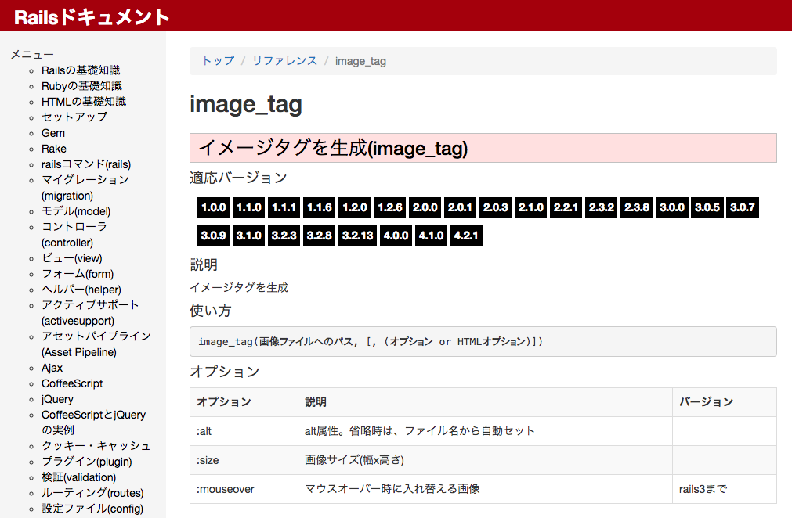
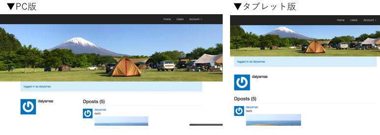
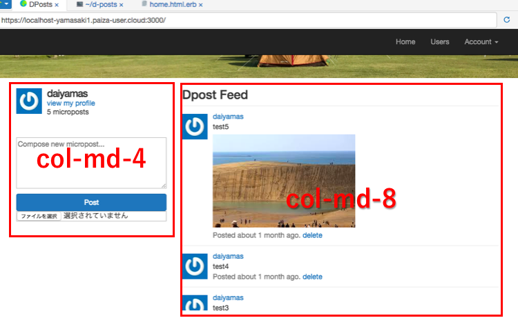
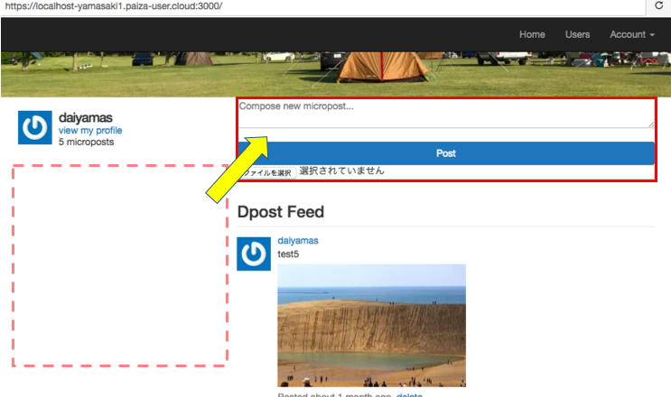

配置した画像をレスポンシブに設定する方法。
D-postの各ページにキービジュアルを配置できたものの、現状では画像の元サイズのまま表示されています。 html、cssで作成した場合は、cssファイルで以下のような設定をかけますが、D-postはBootstrapを読み込み済なので class属性での設定が可能ではないかと思い、ソースの記述方法を調べてみました。
image_tagの生成方法については下記サイトを参照しました。
http://railsdoc.com/references/image_tag
配置する画像とクラス属性の設定方法を参考にして、下記ソースを記述してみました。
<body>
<%= render 'layouts/header' %>
<%= image_tag("bg-photo.jpg") %>
<body>
<%= render 'layouts/header' %>
<%= image_tag("bg-photo.jpg", :class => "img-responsive") %>
サーバーを起動して検証してみたところ、問題なくレスポンシブ対応していました。 「img-responsive」とクラス属性を記述するだけで反映されます。CSSで設定しなくてもいいので、 記述の手間が省けとても便利。最終的には画像の上にテキストを表示させたいので、 画像のbackgroud表示の設定方法を引き続き調べていきたいと思います。
プロフィール画像+テキストの挿入、コメントフォームの移動方法は?
ユーザーページは左右2カラム構成で、左部分にプロフィールと投稿フォーム、 右部分にツイートのタイムラインが表示されています。 ここから下記の仕様に変更をかけたいと考えています。
ビュー関連のファイルはapp/views/layouts/以下にあるので、すべてのファイルをもう一度確認してみました。 home.html.erbファイル内に、「col-md-4」と「col-md-8」のクラス属性で記述されている箇所が該当しています。 詳細は下記ソースの通りです。
<aside class="col-md-4">
<section class="user_info">
<%= render 'shared/user_info' %>
</section>
<section class="micropost_form">
<%= render 'shared/micropost_form' %>
</section>
</aside>
<div class="col-md-8">
<h3>Dpost Feed</h3>
<%= render 'shared/feed' %>
</div>
試しに左カラムのプロフィール部分を右カラムに移動してみたところ、問題なく表示されました。 上記1〜3の記述方法については引き続き調べていきたいと思います。
本日のミニ備忘録
久しぶりに午前・午後共に個別の作業に集中することができました。Railsで作成した各ファイルの構成も 把握できてきたので、この調子でカスタマイズを進めていきたいと思います。